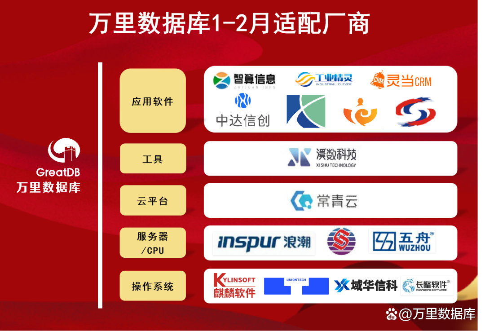
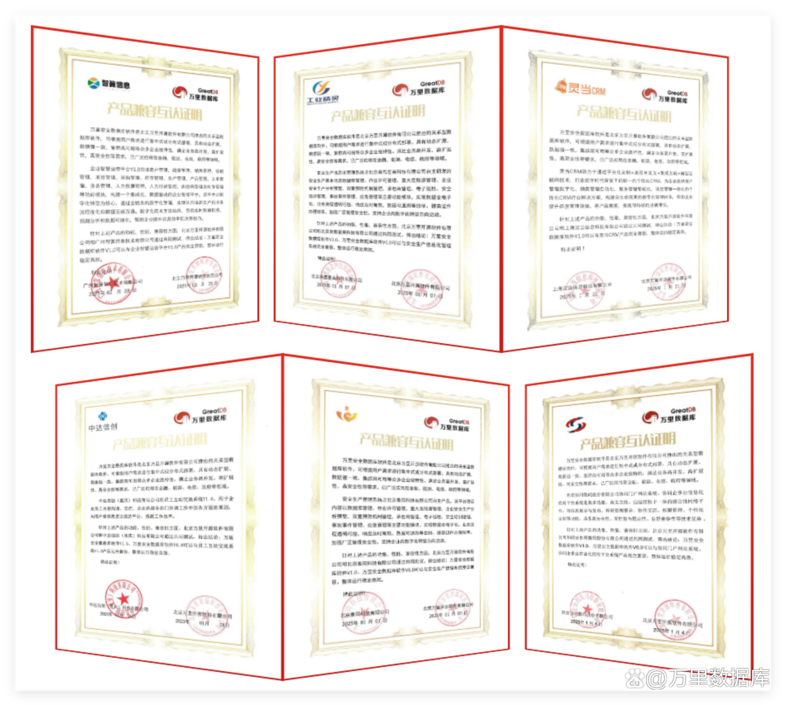
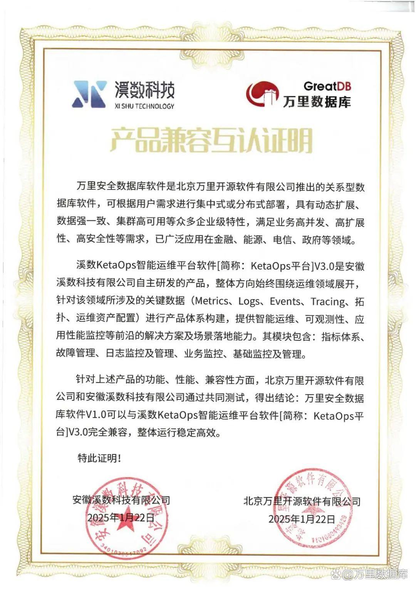
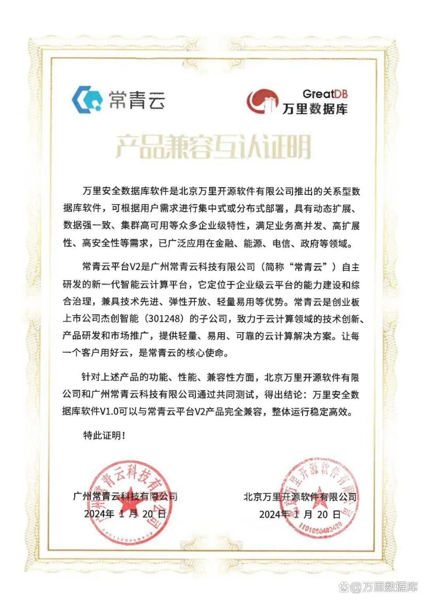
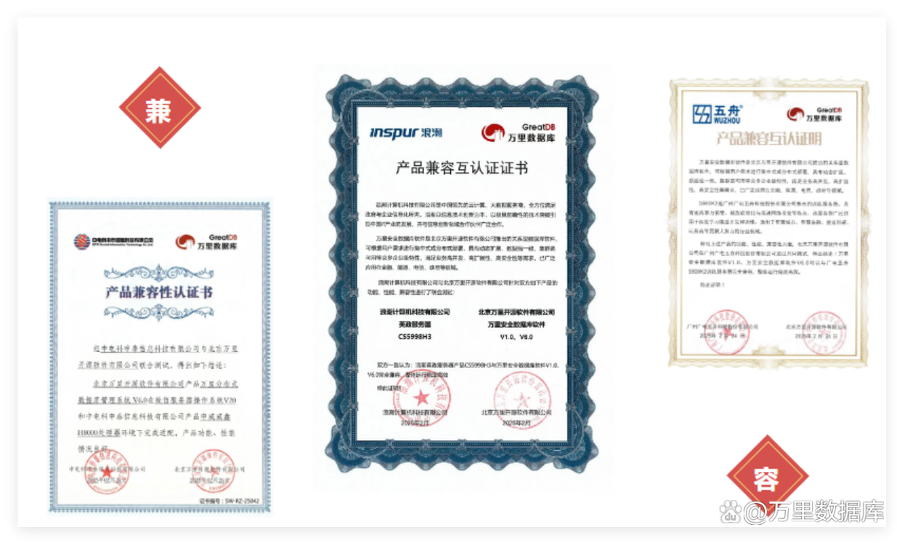
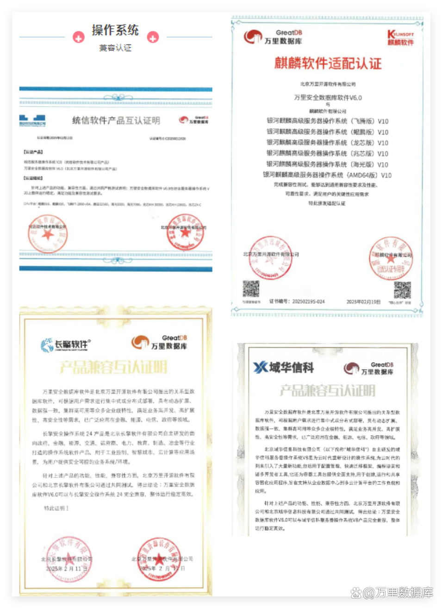

20+生态伙伴、5大领域全栈适配！万里数据库交出硬核双月兼容答卷
2025开年之际，万里数据库在生态兼容适配领域再结硕果，携手应用软件、工具、云平台、服务器及操作系统等产业链上下游的20余家生态伙伴，共同完成了近60项产品兼容互认证，进一步夯实了国产生态根基，为千行百业数字化转型注入新动能。

生态兼容认证成果全景
1-2月期间，万里安全数据库软件GreatDB与以下五大领域的生态伙伴完成深度适配，覆盖技术全栈，彰显国产化生态体系的成熟度与包容性：
1、应用软件：赋能行业数字化转型
万里数据库与智算信息、昊恩星美、灵当CRM、中达信创、象罔科技、协成致远、西安协同数码在内的7家企业核心业务系统完成兼容认证。测试结果显示，GreatDB与上述企业的ERP、OA、行业垂直应用等系统高度兼容，运行稳定高效，可满足金融、制造、政务等领域对高并发、高可靠性的需求。例如，与灵当CRM系统的平台适配中，GreatDB通过灵活的数据库部署方式，可满足不同应用场景的数据存算需求，助力CRM系统在数字经济时代实现用户的个性化需求与敏捷应用。

2、工具软件：强化全生命周期管理能力
溪数科技的智能运维平台软件与GreatDB完成深度测试。通过适配，双方实现了数据库监控、智能调优、备份恢复等功能的无缝衔接与兼容，可为企业提供从部署到运维的一站式解决方案，显著降低IT运维管理难度。

3、云平台：加速云端生态融合
与常青云的智能云计算平台完成适配，标志着GreatDB在云原生领域的进一步突破。该认证验证了GreatDB在容器化部署、弹性扩缩容及多云环境下的稳定性，为金融、能源等重点行业用户提供了“上云用数”的可靠技术底座。

4、服务器/CPU：夯实硬件基础支撑
万里安全数据库GreatDB与中电科申泰、浪潮计算机-英政服务器、广电五舟在内的国产服务器/CPU完成全栈适配。
基于申威处理器的多核异构架构，GreatDB充分发挥了分布式数据库的事务处理能力，单集群性能实现大幅提升，可为关键行业的核心系统提供高性能支撑。此外，与浪潮服务器的适配进一步优化了GreatDB在高负载场景下的资源调度效率，为金融、电信等行业的超大规模数据处理提供了坚实保障。

5、操作系统：打通国产化“最后一公里”
万里数据库与麒麟软件、统信软件、域华信科、长擎软件等公司的最新版操作系统完成兼容认证。该适配覆盖飞腾、鲲鹏、龙芯、海光、兆芯等多个主流CPU平台，确保GreatDB在国产操作系统上的平滑高效运行，为党政、金融等领域的自主可控替代提供坚实技术保障。

生态共建
促进技术协同创新
此次双月兼容认证成果，不仅是万里数据库技术实力与国产软硬件兼容度的体现，更是推动国产生态协同向前发展的重要举措。
1、技术协同创新
通过国产生态体系的广泛适配，GreatDB与生态伙伴共同优化了资源调度、数据安全等关键技术模块，提高软硬件的运行效率与性能。
2、行业场景深化
在医疗、政务等重点领域，万里数据库致力于与合作伙伴打造多样化的行业联合解决方案，聚焦行业特定应用场景，解决用户痛点，支持其数字化转型与信息技术能力提升。
3、生态标准共建
万里数据库积极参与行业标准制定，推动兼容测试流程规范化、标准化，缩短适配周期，助力生态伙伴快速融入国产生态圈。
2025开年双月，万里数据库以扎实的生态建设成果，再次印证了国产数据库在技术自主与生态协同上的双重突破。未来，万里数据库将与更多伙伴携手，以安全数据库软件GreatDB为核心，从技术纵深发展、行业场景覆盖、生态联盟强化等多维度发力，持续构建更安全、更高效、更开放的国产生态圈，为数字中国建设注入澎湃动力！